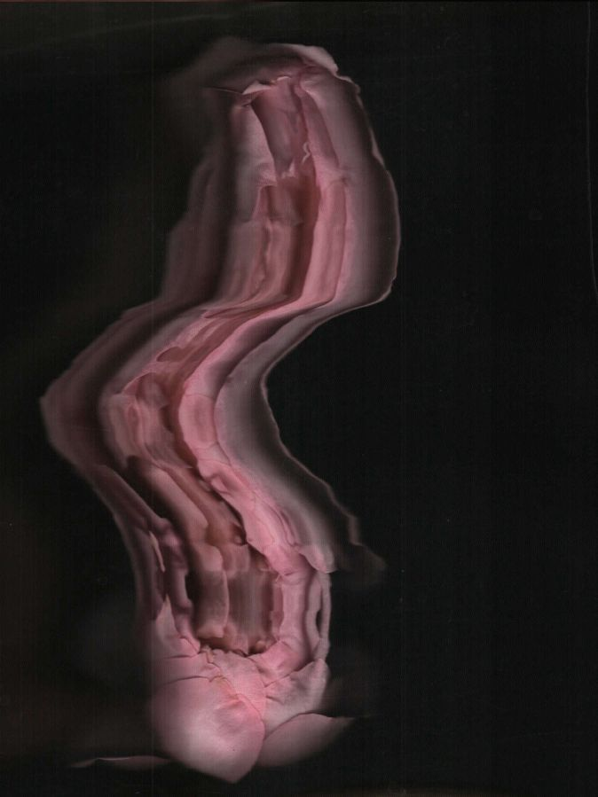
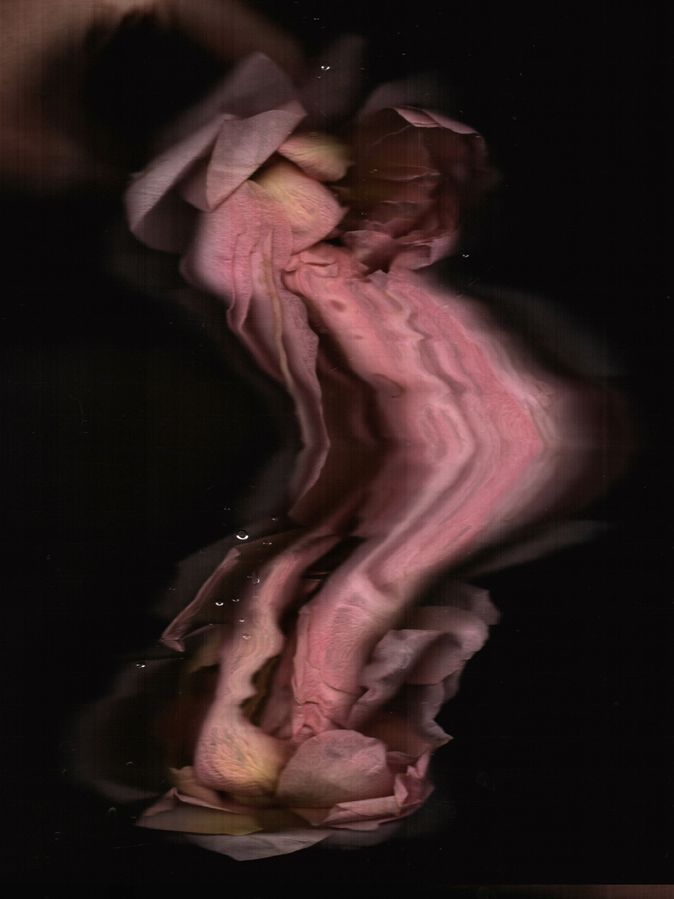
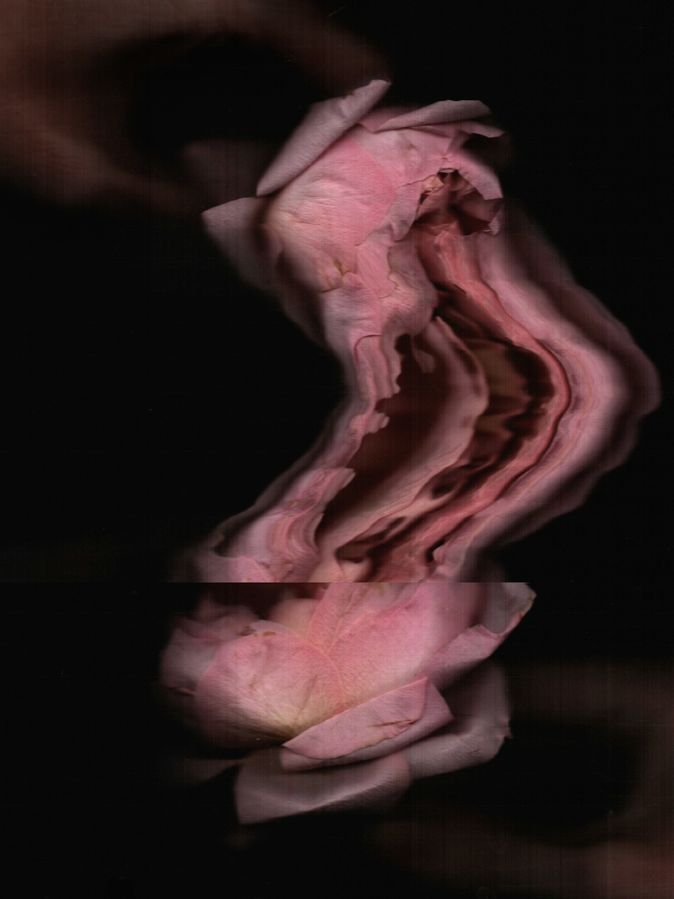

Tender Glitches, 2025



Tender Glitches is a series of hand-made scanographies of a single real flower, in which digital capture becomes a performance. The scanner is guided by hand, and disruptions are deliberately introduced into its protocol — changes of speed, pauses, tilts; the device translates these micro-gestures into bands of the scan, steps and displacements. The glitch here is neither an error nor an effect but a trace of co-authorship between body and machine: the image holds the time of its own making. There is one flower and dozens of versions, and none of them coincides with it: scanning promises an honest capture of the real, yet leaves behind a fan of its unrepeatable versions.
Read more
Tender Glitches is a series of hand-made scanographies of a single real flower. Scanning here is understood as a performance: the scanner is guided by hand, and disruptions are deliberately introduced into the protocol of capture — the speed of movement changes, pauses occur, along with tilts and breaks in the continuity of the gesture.
The device translates these micro-gestures into the image: bands of the scan, steps and displacements appear. These are not defects but indices of process — visible traces of how the picture is produced over time. The scanner does not arrest a moment: it records duration line by line, and the movement of the hand stays stretched into a line.
The glitch in this series is neither an error nor an effect but a language of co-authorship: each image is a trace of the encounter between body and machine, and the question of whose action it is remains open.
There is one object and dozens of versions, and none of them is it. Scanning promises an honest capture of the real — and each time produces, instead of it, a new, unrepeatable version. The series holds this fan open without choosing a "correct" one: the real flower remains unreachable between its own images. Where automatic capture strives for seamless smoothness, these images keep their seams — traces of being made by a body, in time, in a single attempt.
Tender Glitches: Seamless, 2026

Frame from video. Full video on request — Telegram or email.
The video is built on the hand-made scanographies of the Tender Glitches series. Each scan holds a trace of the body — pauses, tilts, glitches of the scan, left by the hand during scanning. Between these frames a neural network fills in the transitions: a smooth movement that never happened — neither the hand nor the flower took part in it. A flawless smoothness appears, in which the flower seems to come alive — but the more convincing the movement, the less of the real remains in it: the synthesis erases the trace of the gesture, and the matter begins to behave impossibly — flowing, melting, giving away the substitution. The video loops: the "resurrection" repeats again and again, never completing and never returning the original. The soundtrack is assembled from real scanner recordings and generated ones: the mechanical sounds of the moving scan bar are woven into a continuous synthetic background, and in the audio the same thing happens as in the image — the boundary between the recorded and the fabricated disappears.
Read more
The video is built on the hand-made scanographies of the Tender Glitches series — images of a single real flower in which the scanner recorded not only the object but the gesture: pauses, tilts, changes in the speed of the hand, stretched into bands of the scan. Each scan is a trace of co-authorship between body and device.
Between these frames a neural network fills in the transitions. The morphing produces a movement that never happened: the flower did not move, the hand did not guide it — the in-between states are entirely invented by the algorithm. The body disappears from the co-authorship; what remains is a machine imitating that it was there.
The synthesis works flawlessly smoothly — and it is precisely the smoothness that gives it away. The matter of the flower behaves impossibly: the petals flow like a viscous liquid, melt and fuse. The coming-to-life looks convincing and feels wrong — the more perfect the movement, the clearer it becomes that this is not the flower but a version of it, drifting ever further from the original.
The same principle works in the sound. The audio is assembled from authentic recordings of the scanner that made the frames and from generated sounds; the mechanical layer of the moving scan bar is synchronized with the glitches in the image, and beneath it runs a continuous synthetic background. The recorded and the fabricated are mixed so that they cannot be told apart by ear — the real and the generated cease to be separable.
The video loops: the attempt to restore the flower in time repeats again and again and never completes. The series of scanographies holds what remains of the real; the video shows what happens when one tries to bring that remainder back to life — and with each seamless transition, less of the real is left.